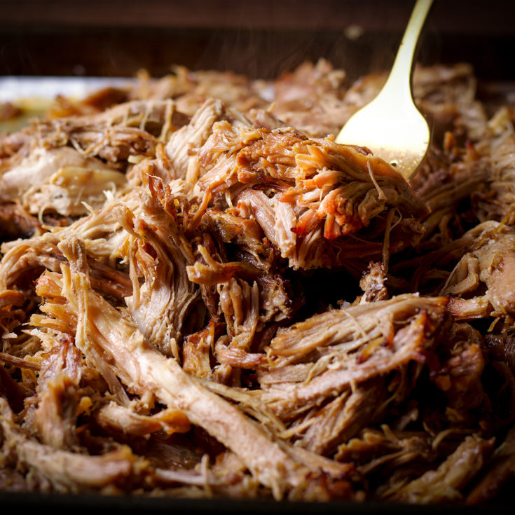

Mexican Pork Carnitas Recipe

Description
This carnitas recipe makes juicy Mexican pulled pork. I get requests from
friends and family to make this repeatedly. The pork is braised with lime
and spices for a delicious, distinctive flavor, then baked until
fall-apart tender. Serve with warm, fresh tortillas and salsa.
Carnitas (which means "little meats" in Spanish) is a Mexican dish. It
consists of pork that is simmered or braised with seasonings and fat until
it's tender enough to be shredded. The shredded meat is then roasted until
it's brown and crispy.
Ingredients
- 1/4 cup vegetable oil
- 4 pounds pork shoulder, cut into several large pieces
- 3 tablespoons kosher salt
- 1 onion, chopped
- 1 clove garlic, crushed
- 3 tablespoons lime juice
- 1 tablespoon chili powder
- 1/2 teaspoon dried oregano
- 1/2 teaspoon ground cumin
- 4 (14.5 ounce) cans chicken broth
Steps
- Gather all ingredients.
-
Heat vegetable oil in a large Dutch oven over high heat. Season pork
shoulder pieces with salt, then arrange in the Dutch oven. Cook until
browned on all sides, about 10 minutes.
-
Stir in onion, garlic, lime juice, chili powder, oregano, and cumin.
Pour in chicken broth; bring to a boil. Reduce heat to medium-low,
cover, and simmer until pork is very tender, about 2 1/2 hours.
- Preheat the oven to 400 degrees F (200 degrees C).
-
Transfer pork shoulder to a large baking sheet; reserve cooking liquid.
Drizzle a small amount of cooking liquid over pork pieces and lightly
season with salt.
-
Bake pork in the preheated oven until browned, about 30 minutes. Drizzle
more cooking liquid every 10 minutes; use two forks to shred pork as it
browns.
- Serve hot and enjoy!